Any feedback is welcome!
As you learned in Lesson One, before uploading data the line names have to exist in T3.
Click 'Lines' from the top menu bar and 'Select Lines by Properties' from the dropdown menu. (Figure 1.1)
Enter line names in the 'Name' text box. A list can also be pasted in from an Excel column, text file, etc. (Figure 1.2)
If the lines records exist in T3, a report will be generated on the lower section on the page. (Figure 1.3)
If germplasm lines are not on T3, like the example lines Karma and Dogma, error messages are generated.
Figure 1.1. T3 Homepage with Lines Menu Tab highlighted
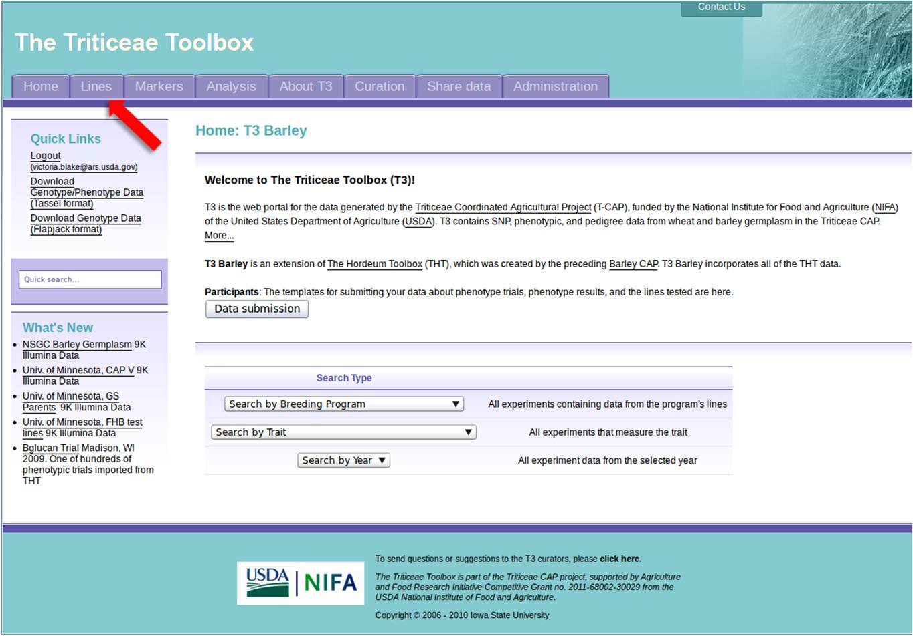
Figure 1.2. Line Properties selection menu on T3.
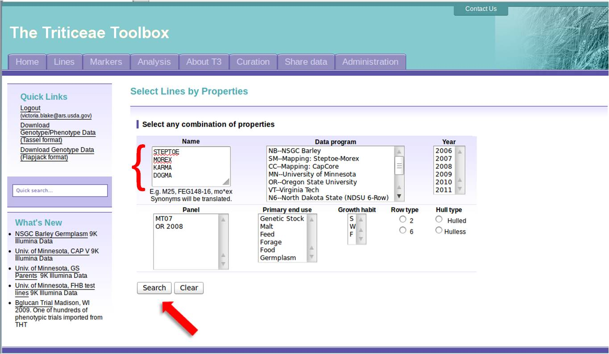
Figure 1.3. Results of a Line Name search in T3
Note that Steptoe and Morex are in T3, Karma and Dogma are not found and will require a line input file before T3 will accept experimental data for those lines.
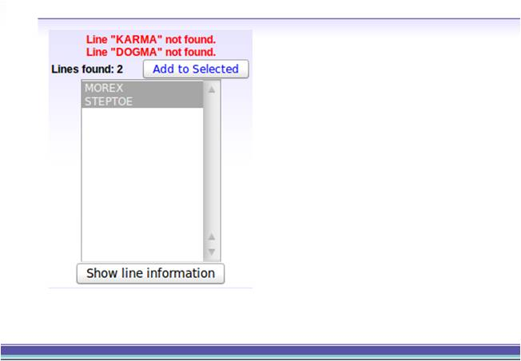
Click the 'Data Submission' button on the T3 homepage (Figure 2.1). This takes the user to the Participant's Page (Figure 2.2). For genotype data file examples, select three files:
Figure 2.1. Gateway to TCAP participants tools is the 'Data Submission' button on the T3 homepage
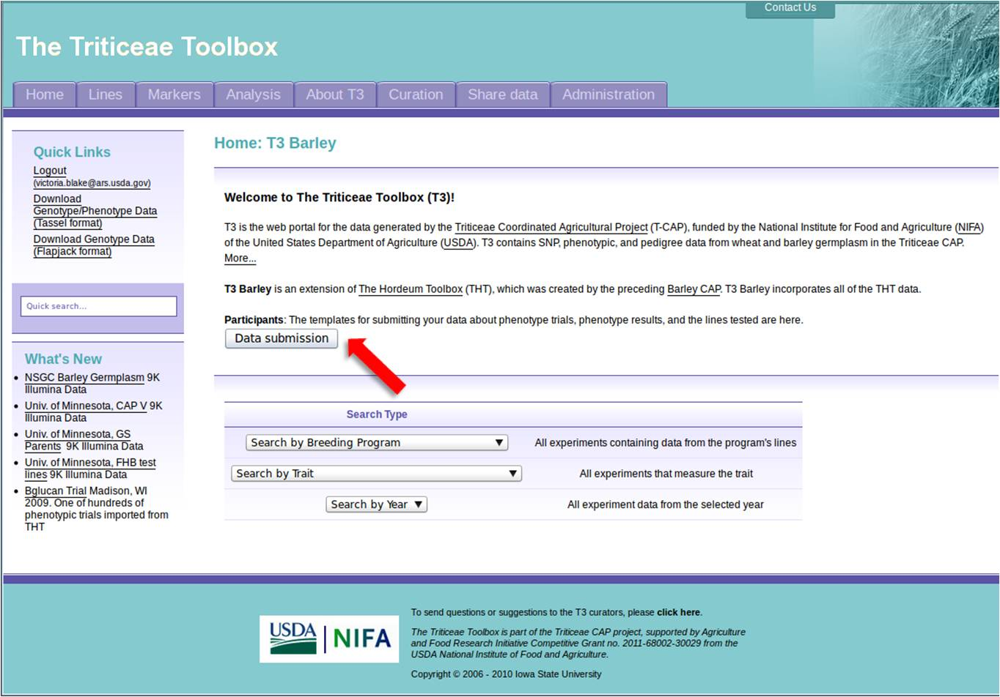
Figure 2.2. Participants links for example files and templates
Figure 2.3. Example of a genotype experiment annotation file, with embedded instructions.
All fields are required.
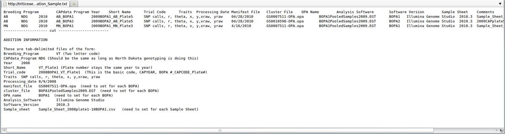
Figure 2.2. Example of a genotype experiment trialcode file.
This is simply two columns, the first with the line name, the second with the trial code. Trial codes are somewhat flexible and typically consist of the "ExptYear_Location_Description". For example, CAPV2011_MN_9K.
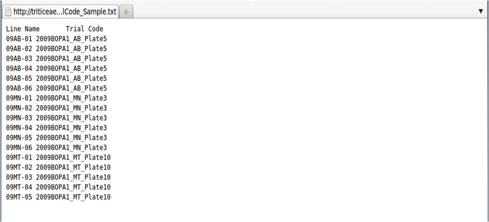
Figure 2.3. Example of a genotype experiment 2D results file.
Place markers in Column A and Line Names as column headers. Note that when a spreadsheet is saved to a tab-delimited file these will no longer align.
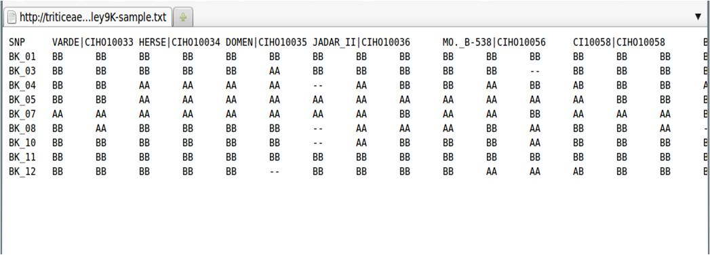
Log onto the T3 Sandbox using your user login or User ID : t3user@graingenes.org and Password : t3password .
Once you are logged on, you will see three additional tabs on the top menu bar. The data upload pages are linked to the Curation menu. (Figure 3.1)
Figure 3.1. T3 Curation Menu Dropdown
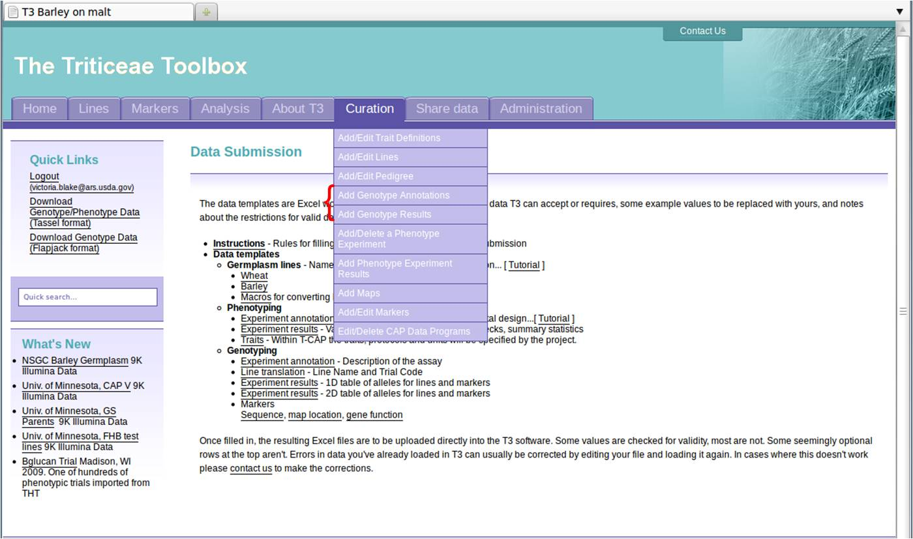
Upload the annotation file for the genotype experiment first. Select "Add Genotype Annotations" from the curation dropdown menu to retrieve the annotation upload page. (Figure 3.2)
Use the Browse button to select the file on your computer, then click the 'Upload' button. At this time all data on the production database is public.
Figure 3.2. Genotype Annotation File Upload Page
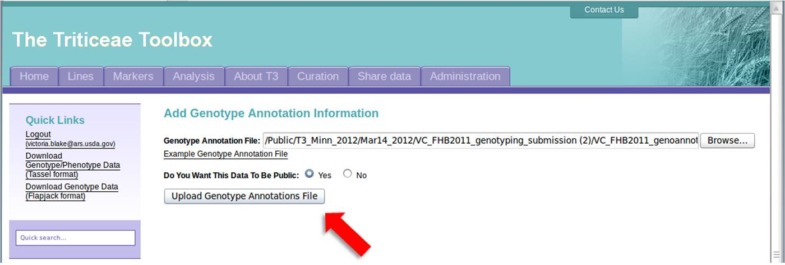
The Validation page shows you that the file will upload. T3 also reads the three file names for raw data (manifest, cluster file and sample sheet), and gives the user the opportunity to upload those files.
Figure 3.3. Genotype Annotation Validation Page with Raw Data Upload Interface
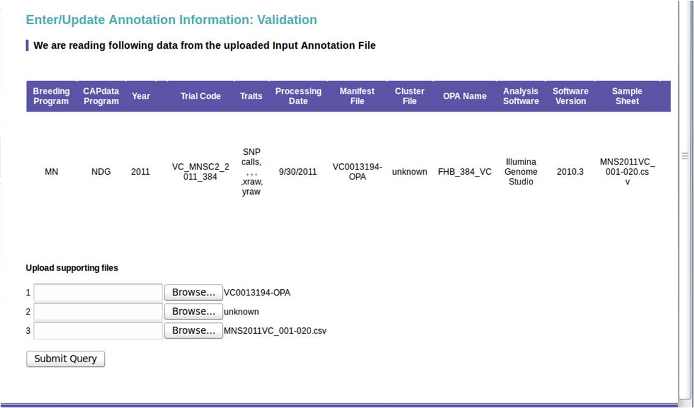
Finally, the result page shows you that the data uploaded successfully, but we did not load the raw data.
Figure 3.4. Successful Annotation Upload, without Raw Data.
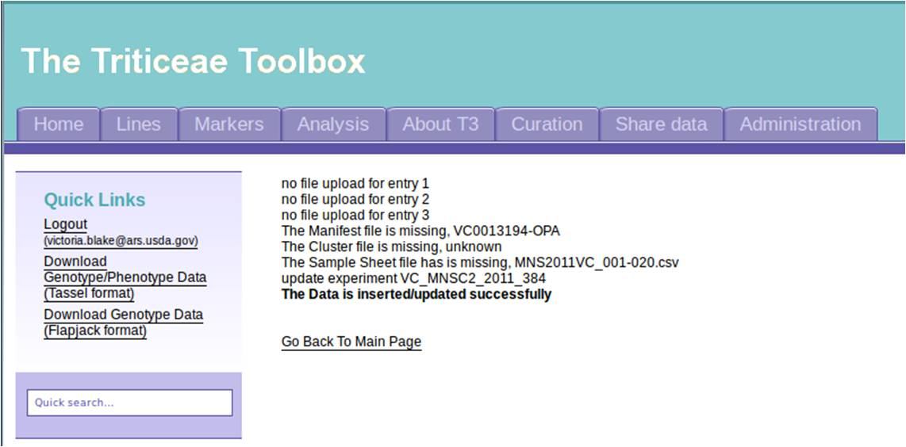
Click 'Add Genotype Results from the curation dropdown menu to get the results upload page (Figure 3.5).
Use the browse buttons to select the line translation file and results file from your computer. The default data structure is 2D. Uploading genotype results can take up to several hours and is done offline. Be sure the e-mail address is correct. Once you submit the data results will be mailed.
Fatal errors are usually reported within seconds. A successful upload message will be mailed with a link to the data processing log. (Figure 3.6)
Once the data loads properly, or if you have any questions, please contact Victoria Blake at victoria.blake@ars.usda.gov.
Figure 3.5. Genotype Line Translation (Trialcode) and Results Upload Page. 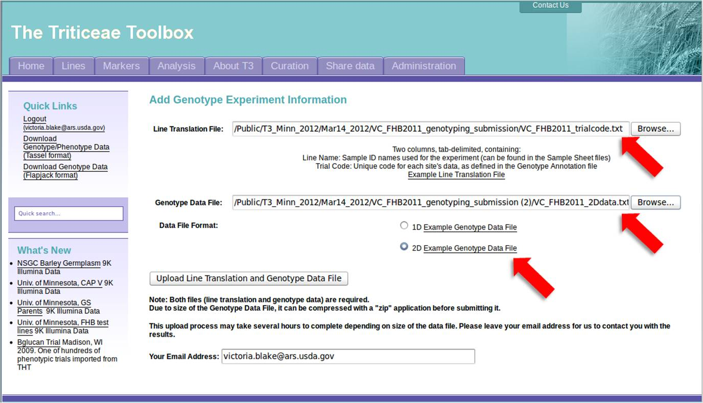
Figure 3.6. E-mail of Successful Upload
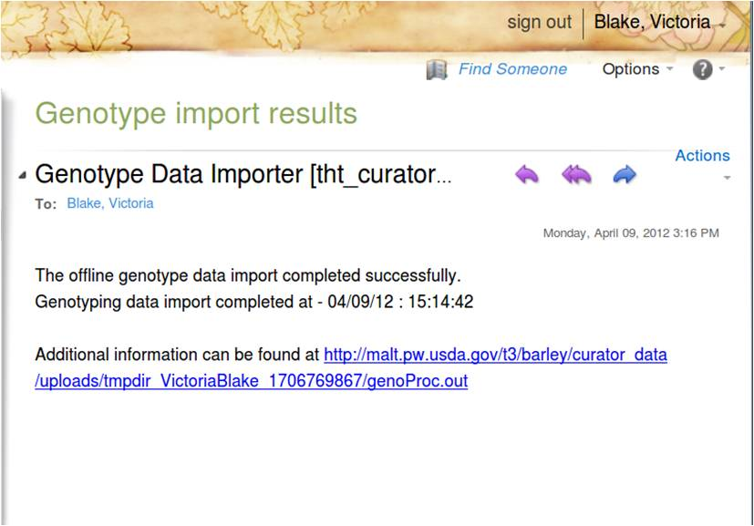